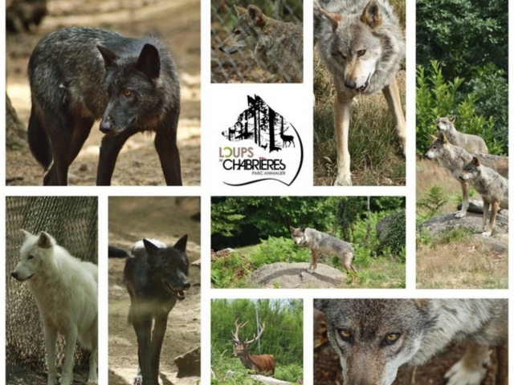

Au bout du chemin en sous-bois, se dresse la palissade. Derrière, vous entrez dans le repaire des Loups de Chabrières. Une nature sauvage préservée, où le temps semble suspendu. Loups gris, blancs et noirs - Faune sauvage - Mini-ferme, espace muséo, visites libres ou guidées.. L’équipe du parc est heureuse de vous accueillir au cœur de la forêt de Chabrières.
